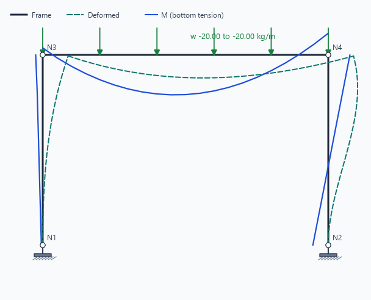
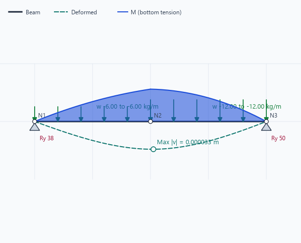
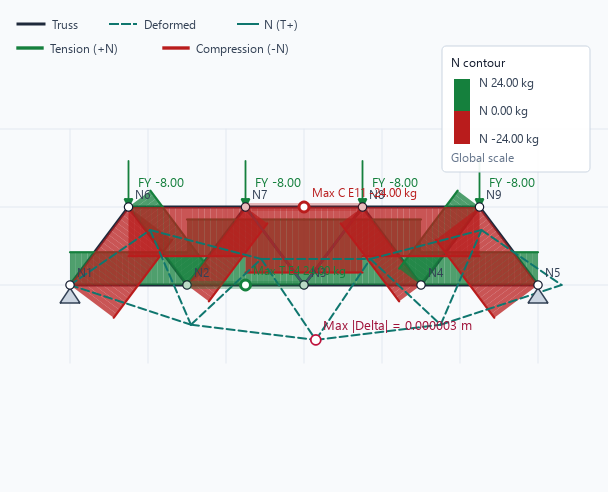
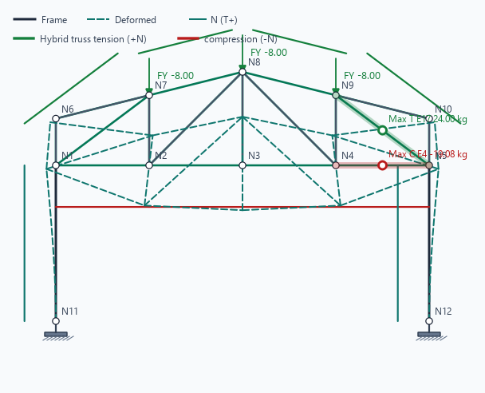

Frame Workspace
Create nodes and members with the Model tools, then place supports and loads. Run Analysis and choose N, V, M, D, All, or FBD. A Fixed support is a hatched wall; a Pin is a triangle.

Beam Workspace
Beam authoring locks nodes to one horizontal baseline. Start with Cantilever, Simply Supported, or Continuous templates. Use Beam commands to add spans, insert supports, and resize the selected span. Intermediate supports in a continuous beam are Pinned by default. Select multiple spans to apply one load in one action.

Truss Workspace
Truss members are pin-jointed and accept nodal Fx/Fy loads. Solver convention is +N = tension. The standard Truss N view uses green for tension and red for compression, while the Contour palette menu also provides Signed Blue/Red and Spectrum choices. The canvas and report identify the governing tension and compression members.

Hybrid Frame-Truss Workspace
Use Model > Hybrid Frame-Truss Templates to create Frame columns with Truss chords and webs at shared joints. Frame members carry N/V/M; Truss members carry axial N only. Current templates are planar 2D and retain metadata for a future 3D generator.

Results and Contours
| Control | Purpose |
|---|---|
| N / V / M / D / All / FBD | Changes the displayed result, without changing solver signs or numerical values. |
| Contour | Fills the active result diagram. The Palette control offers Signed Blue/Red, Spectrum, and Truss axial Green/Red. |
| Global / Member | Uses one range for the whole model or normalises each individual member for comparison. |
| Values and hover crosshair | Shows sampled values and the exact internal action at the current station. |
Reports
Choose Report > Export HTML Report or Export PDF Report. The content dialog can export the current result, all cases and combinations, or all combinations. Canvas figures may be omitted, captured only from the current canvas result, included as a summary (Model, D, FBD), included in full, or picked view by view. Figure capture shows progress and can be cancelled before the report is written. Truss omits V/M because they do not apply. Figures are constrained to the A4 printable width. N/V/M values use four decimals; geometry is metres and translational displacement is millimetres to four decimals. Envelope is not used for FBD equilibrium.